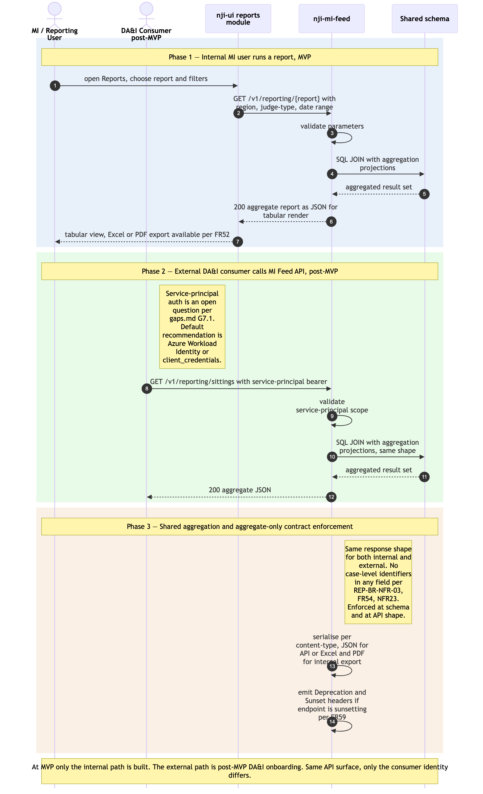

MI Feed / Reports consumption
Sequence diagram of how aggregate management-information is consumed from ram-mi-feed, by two distinct actors:
- Internal MI / Reporting users — at MVP, open the Reports module in
ram-ui, pick a standard report (utilisation, sitting analysis, jurisdictional split, etc.), apply parameter filters, render results, and export to Excel or PDF. - External DA&I consumer — post-MVP, calls the MI Feed REST API directly as a service principal to ingest aggregate data into their own pipelines, replacing today's manual export-and-transform chain.
Both paths hit the same backend (ram-mi-feed) and are bound by the same aggregate-only contract: no case-level data anywhere in the response, ever (REP-BR-NFR-03 / FR54 / NFR23). This contract is the most important architectural invariant in the read-model layer — it bounds FOI scope (NFR33), protects against the data-scope concerns flagged in the PRD, and is enforced both at the schema level (no case-level columns exist in any RAM Pathfinder table that MI Feed reads from) and at the API-contract level (no case-level field in any response shape).
ram-mi-feed holds no own tables — it SQL-JOINs aggregates from the shared schema, the same Strategy A pattern as ram-itinerary (./itinerary-federated-read.md), but with aggregation projections rather than per-record cells.
The as-is equivalents are Module 12 Reports in ../../../docs/architecture/asis/functional-modules.md and Integration Flow 7 Management Information & Reporting (JI → DA&I) in ../../../docs/architecture/asis/integration-dependencies.md. The as-is flow is export-and-transform (Excel/PDF copied out of JI, transformed in DA&I); the RAM Pathfinder MI Feed API is the post-MVP replacement.
Three phases: (1) internal MI user runs a report; (2) post-MVP external DA&I consumer calls the same API; (3) shared aggregation + contract enforcement.
Not in this diagram
- External consumer onboarding (service-principal credential issuance, OAuth scopes, rate-limit policy assignment) — programme-management activity, not a runtime flow.
- MI Feed cache — none at MVP per architecture Principle 2. Considered if NFR8-like measurement shows reports breaching ≤ 30 s.
- Tribunals data extension — flagged as a strategic gap in
../../../docs/architecture/asis/data-dependencies.mdand the as-is Reports module; out of scope for RAM Pathfinder MVP. - Per-report parameter validation detail — varies per report; handled by the controller as standard request validation. Not drawn.
Cross-cutting steps omitted for clarity
- Authentication + per-request authorisation — both flows. Internal MI users go through HMCTS IdP OIDC; external DA&I consumers use a service principal (currently a post-MVP open question per
../gaps.mdG7.1 — default recommendation Azure Workload Identity, orclient_credentialsagainst the IdP if it supports non-human principals). The diagram shows the auth boundary only. Full mechanics:./user-authentication-and-authorisation.md. - All UI → service and external → APIM calls flow through Azure API Management; APIM is where rate-limit and
Deprecation/Sunsetpolicies apply.

Source: ./mi-feed-and-reports-consumption.mmd (Mermaid). Regenerate with mmdc -i mi-feed-and-reports-consumption.mmd -o mi-feed-and-reports-consumption.png -w 2400 -s 2 --backgroundColor white.
Phase summary
| Phase | Driver | Architectural rule | Outcome |
|---|---|---|---|
| 1 — Internal MI user runs a report | MI / Reporting User | FR53 — fixed catalogue of standard reports with parameter filters per report. Region/Office/judge-type/date-range scoped per FR49 / R2. | Tabular report rendered in ram-ui; copy/export to Excel or PDF via FR52 |
| 2 — External DA&I consumer calls MI Feed API (post-MVP) | DA&I analyst script / system | FR54 — aggregate-only REST contract; service-principal auth; standard parameter filters; same data shape as internal reports | Aggregate JSON returned to consumer; replaces today's export-and-transform chain |
| 3 — Shared aggregation + contract enforcement | ram-mi-feed (no own tables) |
Principle 1 + 2 — SQL JOIN over the shared schema with aggregation projections; no case-level data in any response shape (REP-BR-NFR-03 / FR54 / NFR23); contract enforced at schema (no case-level columns) and at API shape (no case-level fields) | Aggregated result with no case-level identifiers; serialised per content-type negotiation (JSON for API; Excel/PDF for internal export) |
Where to find more detail
| Detail | Location |
|---|---|
ram-mi-feed repo purpose and key functions (no own tables — SQL JOINs) |
../repository-strategy.md Phase 8 row |
| Aggregate-only contract enforcement (REP-BR-NFR-03 + FR54 + NFR23) | PRD FR54, NFR23; ../../architecture.md → Step 2 Cross-Cutting Concerns (Forbidden data) |
| Reports catalogue (utilisation, sitting analysis, jurisdictional split, summary by court / work type, …) | PRD FR53; Module 12 in ../../../docs/architecture/asis/functional-modules.md |
| Reports UI module structure | ../repo-structure.md → ram-ui/src/modules/reports/ |
| Service-principal auth for external consumers (open question; pre-Phase-9 decision) | ../gaps.md G7.1; ../assumptions.md A35 |
| Related read flow — Itinerary federated read (same SQL-JOIN-on-shared-schema pattern, per-record cells rather than aggregates) | ./itinerary-federated-read.md |
| As-is equivalents (Module 12 Reports; Integration Flow 7 MI & Reporting → DA&I) | ../../../docs/architecture/asis/functional-modules.md → Module 12; ../../../docs/architecture/asis/integration-dependencies.md → Flow 7 |
Source: _bmad-output/planning-artifacts/architecture/sequence-diagrams/mi-feed-and-reports-consumption.md